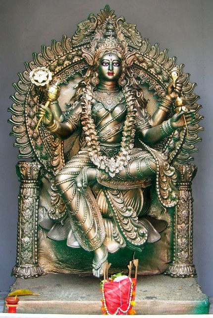

|
|||||
lordess sakthi
NAVA DURGA
SIDDHIDATRI
|
 |
|
Goddess Durga
is known as Siddhidatri in its ninth power. According to the
name, Goddess gives all sorts of accomplishments to her
seeker in this vigilance. The body-shape of the Goddess is
divine, beautiful, beautiful and beautiful; many gems bear
priceless jewels, sit on the lotus and lion seat. The
Goddess is with four sides, the Goddess chanting in the
right arms carries a lotus flower and a conch in the mace
and left arms. According to Markandeya Purana, Ashta
Siddhiya! There is anima, majesty, dignity, humility,
realization, preference, godliness and personality, all
siddhis are provided by them. There is nothing in the
universe which isnot inaccessible to Goddess Siddhidathri .
|